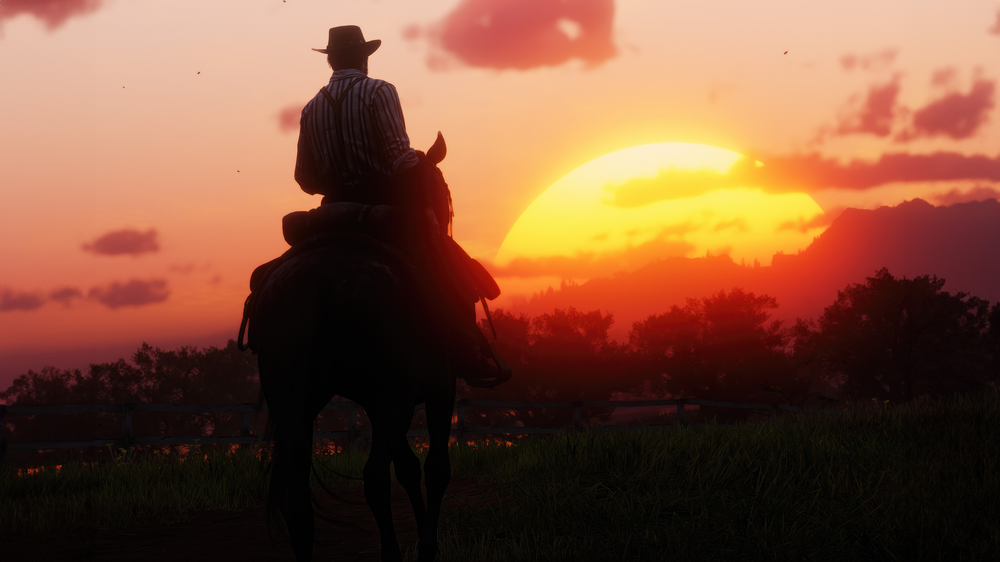
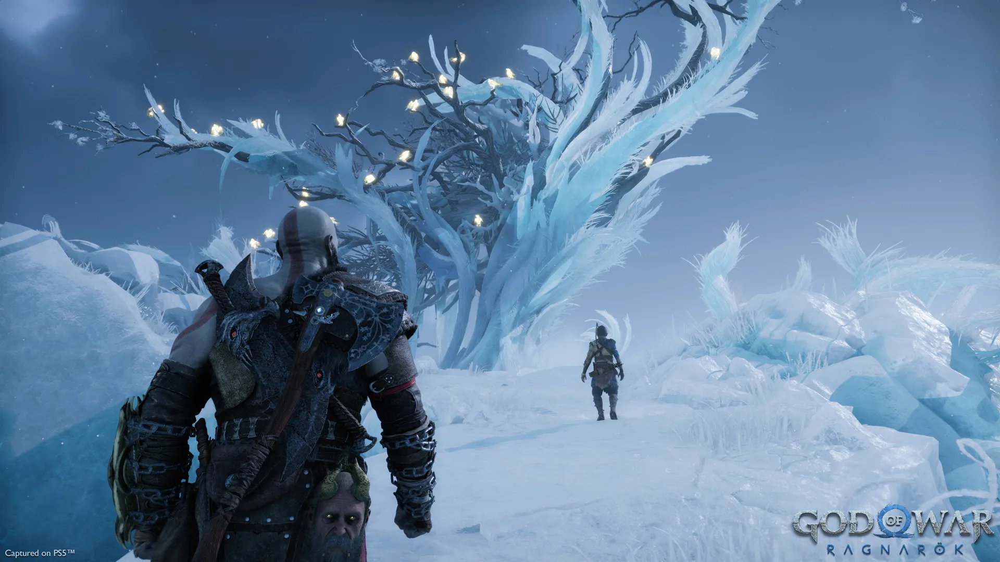
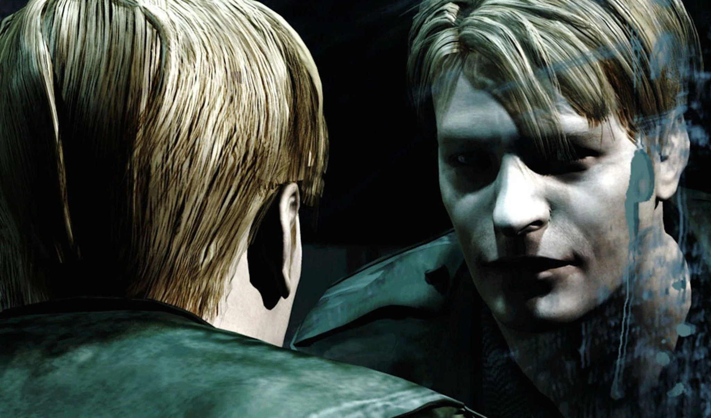

A continuación dare una pequeña reseña personal sobre estos 3 títulos
Red dead redemption 2 es una obra maestra, es un juego que a pesar de ser del 2018, se sigue viendo impecable graficamente, la cantidad de gigabytes que pesa el juego lo valen y bastante; es un juego extremadamente extenso con paisajes hermosos y un mundo demasiado vivo, llega a parecer que no estas interactuando con NPCs, tiene una historia increible y dramatica, de tan largo que es el juego hay un punto en donde empiezas a tener los mismos ideal que Arthur Morgan, haciendo que la experiencia sea aun mas inmersiva.
God of war Ragnarok es un gran juego y un excelente titulo de la saga,el juego tiene unos paisajes de fantasia demasiado hermosos, con una historia de una relacion padre e hijo que esta muy bien estucturada, este videjuego muestra ese tipos de historias que seria muy dificil de meter en una sola pelicula, ya que crear una historia asi requiere tiempo, mas que nada para poder mostrar esa relacion familiar a lujo de detalle sin omitir nada, la musica de este título juega un papel muy importante, de no ser por la musica mi percepcion del juego hubiera sido algo distinta; y su DLC que funciona como epilogo es quizas la culminacion perfecta de uno de los personajes mas importantes de los videjuegos
Silent Hill es toda una experiencia de terror psicologico, en este juego a pesar de ser del 2001, los graficos no han impedido que no se cumpla el objetivo del juego, que más que asustarte, seria incomodarte, el gameplay no tiene musica para poder obtener una atmosfera de soledad, como si realmente estuvieras solo, y las cinematicas que tiene tampoco dan miedo, pero son muy inquietantes, sumado con la musica que a veces es algo rara, le da ese toque de que algo malo va a pasar, es inevitable sentir mala espina por los pesonajes secundarios que no encontramos a lo largo del silent hill, los enemigos que muestra el juego a simple vista se ven perturbadores, pero si nos fijamos en los simbolismos que representan, son todavia más perturbadores, y el final del juego si que es algo que te deja con la boca abierta
